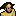
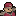
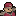
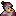

-
 [A lire] Je débute - Partie 1
[A lire] Je débute - Partie 1
-
[A lire] Je débute - Partie 2
-
[A lire] Je débute - Partie 3
-
Carte et terminaux du vaisseau
-
Légendes urbaines et mythes
-
Être mush - Premiers pas
-
Être mush - Tutoriel avancé
-
Compétences, mon compte, klix
-
Logs - Explications
-
Faire du roleplay
-
Guide de Survie (J10+)
-
Frieda - Tutoriel
-
Gioele - Tutoriel
-
Hua - Tutoriel
-
Roland - Tutoriel
-
Chun - Premiers pas
-
Chun - Tutoriel avancé
-
Eleesha - Premiers pas
-
Eleesha - Tutoriel avancé
-
Ian - Premiers pas
-
Ian - Tuto avancé
-
Janice - Premiers pas
-
Janice - Tutoriel avancé
-
Jin Su - Premiers pas
-
Jin Su - Tutoriel avancé
-
Kuan Ti - Premiers pas
-
Kuan Ti - Tutoriel avancé
-
Paola - Premiers pas
-
Paola - Tutoriel avancé
-
Raluca - Premiers pas
-
Raluca - Tutoriel avancé
-
Stephen - Premiers pas
-
Stephen - Tutoriel avancé
-
Terrence - Premiers Pas
-
Terrence - Tutoriel avancé
-
Finola - Tutoriel
-
Chao - Premiers Pas
-
Chao - Tutoriel avancé
-
Andie - Premiers pas
-
Andie - Tutoriel avancé
-
Derek - Tutoriel
-
Thème : L'astrophysique
-
Thème - La mécanique
-
L'enquête - Premiers pas
-
L'enquête - Avancé
-
Thème - La botanique
-
Recherches, projets et relais.
-
Thème : Le pilotage
-
Thème - Les expéditions
-
Titre : Responsable comm.
-
Titre : Commandant
-
Titre : Administrateur NERON
Chao - Tutoriel avancé
Alors vous avez aimé répandre le sang de vos camarades sur les blancs dallages du Daedalus et vous en voulez plus ? Pas de panique, ce tutoriel avancé vous permettra de devenir le nouveau "It's over 9000 !"
 Tireur (niveau 1):Autres Tireur : Stephen Lvl 4, Derek Lvl 1, Paola Lvl 3, Jin Su Lvl 4, Roland Lvl 3, Terrence Lvl 4.> Donne droit à 2 tirs gratuits par jour grâce aux points tireur (
Tireur (niveau 1):Autres Tireur : Stephen Lvl 4, Derek Lvl 1, Paola Lvl 3, Jin Su Lvl 4, Roland Lvl 3, Terrence Lvl 4.> Donne droit à 2 tirs gratuits par jour grâce aux points tireur ( ).
).
> Les tirs ratés diminuent la chance d'avoir un échec critique dans vos prochains tirs.
> Les tirs réussis augmentent la chance d'avoir une réussite critique dans vos prochains tirs.Très utile compte-tenu de votre hyperactivité, Tireur vous permet d'économiser 2 de vos précieux PA ( ) journaliers dans le maniement des armes à feu. Pratique pour abattre un équipier gênant.
) journaliers dans le maniement des armes à feu. Pratique pour abattre un équipier gênant.
- Survie :Autres Survie : Frieda Lvl 3, Hua Lvl 3.En expédition :
> Diminue d'un point tous les dégâts reçus par Chao.
> Augmente d'un point la nourriture récupérée sur un animal.Grâce à cette compétence qui diminue d'un point les dégâts reçus en expédition et augmente la nourriture récupérée sur un animal, Chao devient un allié précieux dans les-dites expéditions.
 Lutteur :Autres Lutteur : Derek Lvl 2.> Augmente tous les dégâts de corps-à-corps octroyés de deux points, si vous n'êtes pas muté.
Lutteur :Autres Lutteur : Derek Lvl 2.> Augmente tous les dégâts de corps-à-corps octroyés de deux points, si vous n'êtes pas muté.
> Peut mettre à la porte un personnage, lui faisant quitter la pièce, pour 2 PA (1 PA si utilisée sur un inactif).Ceci ajouté à vos points de tir, vous ferez des ravages contre vos adversaires, et l'équipage entier craindra vos foudres vengeresses.
 Attention,
le bonus au combat de Lutteur ne se couple pas avec celui du couteau.
Mais, entre nous, quel Lutteur digne de ce nom a besoin d'un couteau ?
Attention,
le bonus au combat de Lutteur ne se couple pas avec celui du couteau.
Mais, entre nous, quel Lutteur digne de ce nom a besoin d'un couteau ?
Possède aussi la fonction Mettre à la porte, qui coûte 2 PA contre un actif et 1 PA contre un inactif. Elle envoie la personne visée dans une pièce adjacente à celle où elle se trouve actuellement. La destination est choisie au hasard.
- Bourreau :Autres Bourreau : Aucun, compétence unique.Donne accès à l'action Torturer :
> Contre 1 PA, enlève 1 PV ( )
à la cible et révèle ses dernières actions. Le nombre d'actions
révélées correspond à l'état de santé de la cible : Moins elle a de
points de vie, plus elle révélera d'actions.Cette compétence
permet, contre 1 PA, d'enlever 1 point de vie à une cible et de
connaître les dernières actions de celle-ci à raison d'une action par
point(s) de vie manquant(s) à la cible. (1 manquant, 1 action révélée ; 7
manquants, 7 actions révélées). Par conséquent, frapper quelqu'un pour
lui enlever davantage de points de vie avant de le torturer peut être
une bonne idée. La torture étant visible uniquement par Chao, personne
ne saura ce que vous voyez.
Attention : Torturer et Frapper sont des actions agressives pouvant
entraîner de sérieux dégâts. Ne les utilisez pas aveuglément, sous peine
de voir les autres se retourner contre vous.
)
à la cible et révèle ses dernières actions. Le nombre d'actions
révélées correspond à l'état de santé de la cible : Moins elle a de
points de vie, plus elle révélera d'actions.Cette compétence
permet, contre 1 PA, d'enlever 1 point de vie à une cible et de
connaître les dernières actions de celle-ci à raison d'une action par
point(s) de vie manquant(s) à la cible. (1 manquant, 1 action révélée ; 7
manquants, 7 actions révélées). Par conséquent, frapper quelqu'un pour
lui enlever davantage de points de vie avant de le torturer peut être
une bonne idée. La torture étant visible uniquement par Chao, personne
ne saura ce que vous voyez.
Attention : Torturer et Frapper sont des actions agressives pouvant
entraîner de sérieux dégâts. Ne les utilisez pas aveuglément, sous peine
de voir les autres se retourner contre vous.
- Oeil fou :Autres Oeil fou : Aucun, compétence unique.> Chaque action agressive vous ciblant coûtera 2 PA de plus à l'agresseur.Cette compétence (passive) permet tout simplement d'impressionner votre adversaire.
 Son effet se cumule avec le statut "pacifiste" de Ian, pour un total de 5 PA par attaque vous visant.
Son effet se cumule avec le statut "pacifiste" de Ian, pour un total de 5 PA par attaque vous visant.
- Intimidant :Autres Intimidant : Aucun, compétence unique. Cette compétence donne l'accès à l'action Intimider, utilisable une fois par jour. Pour 1 PA, elle retire 2 PA et 4 PM (
 ) à la cible. Utile pour lui couper tout moyen de riposte ou de fuite !
) à la cible. Utile pour lui couper tout moyen de riposte ou de fuite !
 2) Jouer Chao mush
2) Jouer Chao mushChose délicate et jouissive s'il en est. Il existe plusieurs façons de jouer Mush. Nous allons détailler ces quelques cas en adéquation avec Chao, après un petit résumé de ses talents.
En tant que bourreau du bord, Chao offre beaucoup de possibilités. Il peut en effet se promener un peu partout sans éveiller trop de soupçons et, s'il possède la compétence Bourreau, peut torturer ses collègues Mushs pour les disculper temporairement, ou au contraire accuser un innocent, le tuer, et crier au transfert. Il est aussi à noter que torturer est une action salissante, vous avez donc un alibi tout fait pour vos extirpations.
- Mush Infecteur : Difficulté variable. Son souci d'hyperactivité se compense par une petite
 phagocytose
(lvl 1) de temps en temps. Assez libre de ses mouvements, Chao peut
aller profiter d'une torture pour un petit poinçon en parallèle, et n'a
pas l'obligation absolue d'être propre.
phagocytose
(lvl 1) de temps en temps. Assez libre de ses mouvements, Chao peut
aller profiter d'une torture pour un petit poinçon en parallèle, et n'a
pas l'obligation absolue d'être propre.
- Mush Bourrin
: Difficulté facile. Rien de bien compliqué. Il suffit de prendre deux
blasters ou un Lizaro, des grenades... Pour ça, pas besoin d'être Chao.
Mais si en plus, vous avez les compétences Oeil fou et Tireur / Lutteur au minimum, que vous avez pris l'armure de plastenite, que vous vous tenez près de  Ian en permanence et que vous phagocytez régulièrement...
A moins d'un coup critique, vous serez quasiment invincible. Tuez les sources de moral / les pilotes / les techniciens et regardez tranquillement le vaisseau sombrer dans le chaos.
- Mush Infiltré : Difficulté moyenne. Une petite compétence Gelée Verte (lvl 5) ou Moisification de Masse (lvl 18 ), pour les plus aguerris, et vos équipiers deviendront fous. Vous possédez la compétence Survie et vos équipiers aiment les expéditions ? Dommage que vous soyez avant tout un
 Traître (lvl 2), n'est-ce pas ?
Traître (lvl 2), n'est-ce pas ?
On vous demande de mettre du fuel () puisque vous pouvez courir ? Oups, un de trop et la planète idéale disparaît. Des tas et des tas de petites choses pour rendre fou votre équipage et lui faire perdre une énergie précieuse peut aussi marcher si vous préférez combattre de l'intérieur.
Les Bases :
Beaucoup de choses valent le coup quand on joue Chao, et le RP (Role Play) n'est pas en reste.
D'après sa biographie, Chao a eu des contacts avec notamment  Finola Keegan et  Kim Jin Su. Si vous ne savez pas par où commencer, aidez-vous des événements de sa biographie
pour construire un personnage. Son caractère peut rapidement devenir
capital pour vous aider à faire passer certaines actions plus ou moins
louches, notamment si vous êtes Mush.
Finola Keegan et  Kim Jin Su. Si vous ne savez pas par où commencer, aidez-vous des événements de sa biographie
pour construire un personnage. Son caractère peut rapidement devenir
capital pour vous aider à faire passer certaines actions plus ou moins
louches, notamment si vous êtes Mush.
RP en roue libre :
Une fois que vous êtes coutumier du RP avec Chao, rien ne vous empêche de vous écarter un peu des grandes lignes des biographies pour forger votre propre Chao.
Serez-vous un criminel en puissance, un admirateur de la pop terrienne des années 1960, un fan absolu du space-polo ou vous battrez-vous avec  Roland pour faire la course dans le vaisseau ou encore avec Stephen au bras-de-fer ?
L'avantage avec Chao, c'est que sa biographie offre suffisamment de liberté pour qu'on puisse partir sur un univers beaucoup plus vaste.